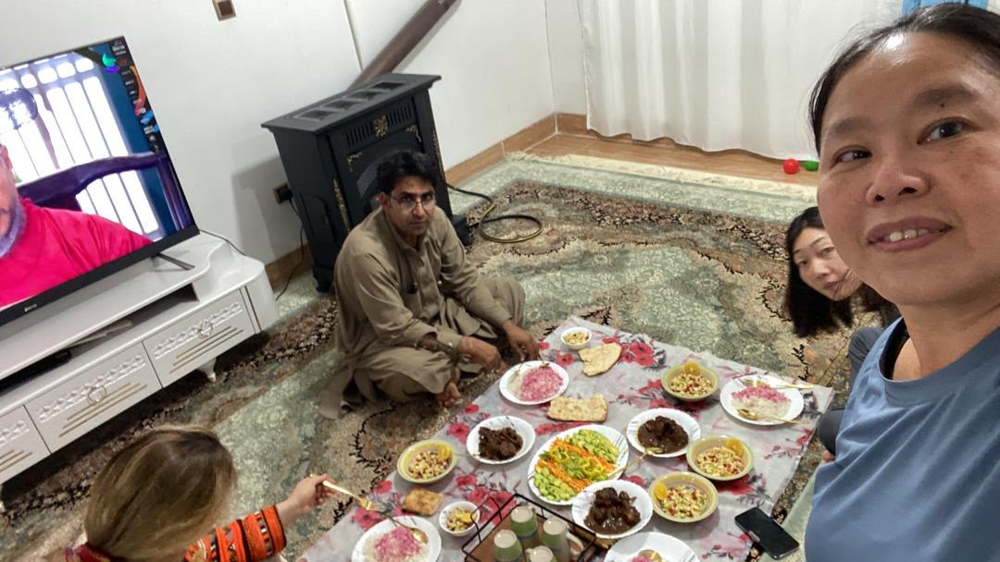
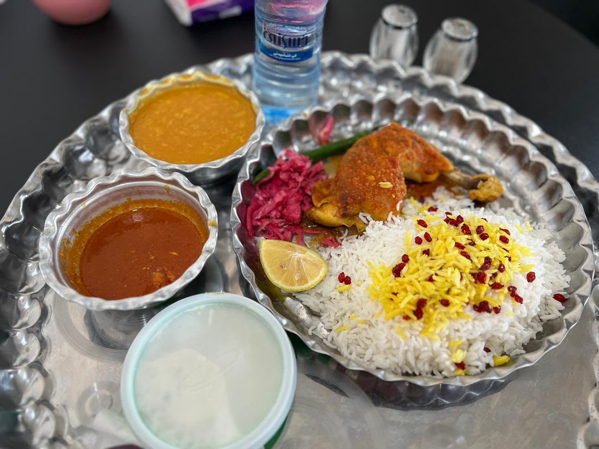
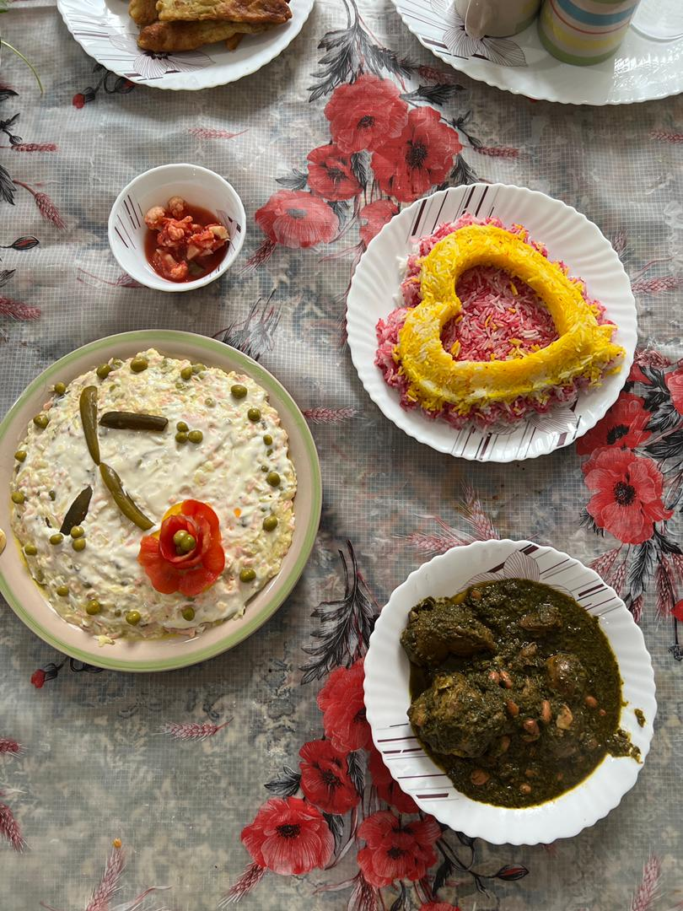

Real Story · 中文
语言不通，可是人还是可以相遇。
28/12/2023 进入 Iran 之后，我在 Zahedan 路边的 campervan 里住了一段时间， 一直到 03/01/2024。那几天我在等 Iran travel card 和 insurance。 对我来说，这不是普通旅游城市停留，而是一个真正的 roadside waiting chapter。
Iran 对我来说很陌生。语言不通，很多东西都需要慢慢摸索。 因为网络和平台限制，我还需要 VPN，才能用 Google Translate 和当地人沟通。 但是很神奇的是，即使我完全不懂他们的语言，我还是慢慢做到了 human interview。
我访问了 furniture shop、coffee shop、restaurant，也遇到很多愿意配合、 愿意笑、愿意等我翻译的人。每一次 conversation 都不是顺畅的， 但每一次都证明：只要双方愿意，人和人之间还是可以用很笨、很慢、很真诚的方式连接。
我自己都觉得很不可思议。 一个 solo woman overlander，住在 roadside campervan，语言不通，还可以拿着 camera 去访问 strangers。 Super leh.
Interview 01 · Furniture Shop
Mobl Vitra Furniture: craftsmanship, design, and a lady salesperson.
In Zahedan, Tuzi visited Mobl Vitra Furniture, a family-run furniture shop. Through translation and patient conversation, the interview opened a small window into local furniture culture, wooden design, showroom work, and the confidence of a lady salesperson introducing the shop.
Interview 02 · Coffee Shop
Gorg Coffee Shop: brother, sister, coffee, and Zahedan warmth.
At Gorg Coffee Shop, Tuzi met a brother-and-sister team. The interview was not only about coffee, but also about the warmth of a local place, the rhythm of a small business, and the charm of trying to understand each other through translation.
Interview 03 · Restaurant
Baghcheh Daie Ahmad: Ghormeh Sabzi, Fesenjan, and hospitality.
At Baghcheh Daie Ahmad, Tuzi experienced Iranian food through the kindness of Ahmad and his team. Ghormeh Sabzi and Fesenjan were not just dishes in this memory; they became a way to enter local taste, history, and hospitality while waiting in Zahedan.
Interview 04 · Restaurant
Asoo Restaurant: tea, staff breakfast, and an unopened door that welcomed her in.
Near Andisheh School, Tuzi reached Asoo Restaurant before it had officially opened for the day. Instead of turning her away, the team welcomed her in, offered tea, and shared staff breakfast. With Google Translate, laughter, and patience, the place became another Zahedan memory of hospitality.
Food Fragments · Zahedan
Food also became a translation method.
Mr. Abdullah also provided meals in Zahedan during those early Iran days. Before the Chabahar winter shelter opened, this was one of the first signs that the road was beginning to answer.

While wandering around Zahedan and trying to interview people through VPN and Google Translate, Tuzi also encountered local food. Some meals were simple stops between interviews; others became part of the human connection around the city.

On 01/01/2024, the Couchsurfing house owner in Zahedan invited Tuzi to join them for a meal. During a roadside waiting week — while still arranging Iran travel card and insurance — this invitation became another quiet form of welcome.

English Memory Summary
Four interviews during a roadside waiting week.
From 28/12/2023 to 03/01/2024, Tuzi stayed in her campervan by the roadside in Zahedan while waiting for her Iran travel card and insurance. She could not understand the local language, but used VPN and Google Translate to communicate.
During that waiting period, she still managed to conduct human interviews with strangers: a furniture shop, a coffee shop, and two restaurants. These interviews became early Iran fragments — not polished tourism, but patient human connection across language barriers.
Heart Statement
语言不通，可是愿意沟通的人，会慢慢把路打开。
在 Zahedan，我不是靠流利语言完成 interview。 我靠 VPN、Google Translate、笑容、耐心，还有一点点 overlander 的厚脸皮。
I did not speak their language. But we still found a way to speak as humans.